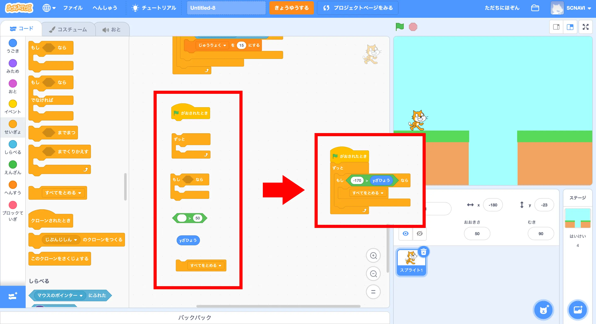
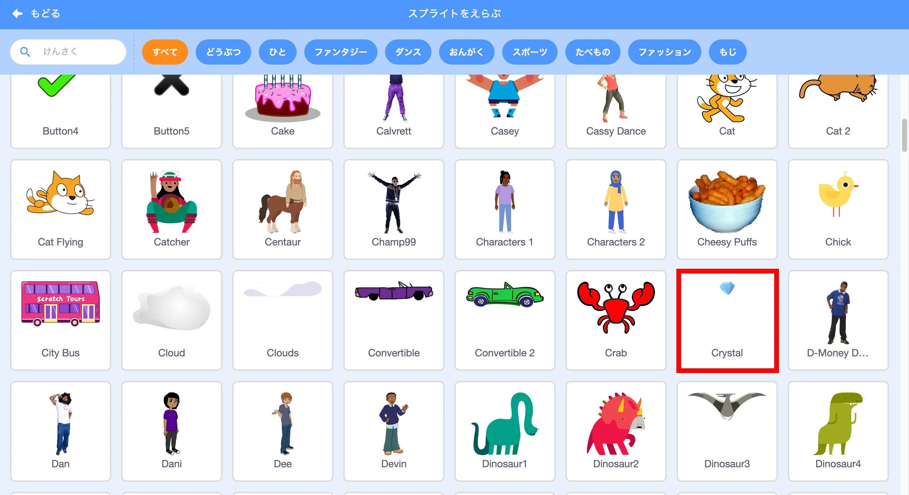

ステージをつくろう！

今回は背景を描くよ！
プレイヤーの動きをつくろう！
ネコをスタート位置に配置しよう！
配置できたら、6つのブロックをこのように組合せよう！
組合せたら、もしならの部分を複製して、
“ひだりむきやじるし”、”-90ど”に変更しよう！

地面の判定をつくるよ！
3つのブロックをこのように組合せよう！
組合せたら、やじるしの箇所に入れよう！
重力をつくろう！
変数を使って”重力”を作るよ！
名前を入れて変数を作ろう！
9つのブロックをこのように組合せよう！
組合せたブロックに4つのブロックを足そう！
これでジャンプできるようになるよ！
ステージを切り替えよう！

落ちたときにゲームオーバーになるようにするよ！
6つのブロックをこのように組合せよう！
ステージの切り替えを作るよ！
さっきのブロックに6つブロックを組合せよう！
ゴールをつくろう!

今回は”Crystal”を使うよ！
触れたらゴールにするよ！
7つのブロックをこのように組合せよう！
これで今回のゲームは完成！
もっと工夫したい場合は、
①ゴールまでの時間を測る
②触れたらスタートに戻るアイテムを作る
などに挑戦してみよう！